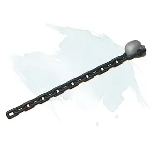

Волшебная палочка сковывания
Wand of Binding
Волшебная палочка, редкая (требуется настройка заклинателем)

Рекомендованная стоимость 501-5 000 зм
У этой волшебной палочки 7 зарядов для использования описанными ниже свойствами. Она ежедневно восстанавливает 1к6 + 1 заряд на рассвете. Если вы истратили последний заряд в палочке, бросьте к20. Если выпадет «1», палочка рассыплется в пыль и уничтожится.
Заклинания. Если вы держите эту палочку, вы можете действием потратить часть зарядов, чтобы наложить одно из следующих заклинаний (Сл спасброска 17): удержание чудовища [hold monster] (5 зарядов) или удержание личности [hold person] (2 заряда).
Помощь в освобождении: Если вы держите эту палочку, вы можете реакцией потратить 1 заряд, чтобы получить преимущество для спасброска, совершаемого для того, чтобы не быть парализованным или опутанным, или вы можете потратить 1 заряд, чтобы получить преимущество для проверки, совершаемой, чтобы вырваться из захвата.